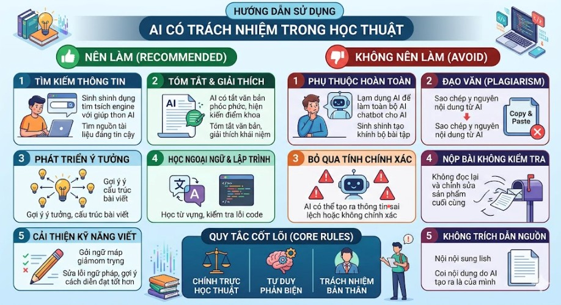

1. Chính sách về việc sử dụng AI trong học tập
Để đảm bảo liêm chính học thuật, việc sử dụng AI cần tuân thủ nghiêm ngặt 3 tiêu chí chính:
- Sự minh bạch: Người học phải công khai minh bạch tất cả các phần nội dung có sự can thiệp hoặc hỗ trợ của công cụ AI trong sản phẩm học thuật của mình.
- Sự trung thực: Công cụ AI chỉ đóng vai trò hỗ trợ tìm ý tưởng, gỡ lỗi hoặc dịch tài liệu; AI không được thay thế hoàn toàn nỗ lực tự thân và tư duy độc lập của người học.
- Trách nhiệm cá nhân: Người học chịu trách nhiệm hoàn toàn 100% trước tính chính xác, tính logic của các thông tin học thuật do AI sinh ra.
2. Thực hiện nhiệm vụ học tập với sự hỗ trợ của AI
Nhiệm vụ thực tế: Thiết lập dàn ý và viết bài luận: "Tác động của AI đến giáo dục đại học".
| Bước thực hiện | Nội dung mô tả | Dữ liệu tương ứng / Prompt sử dụng |
|---|---|---|
| 1. Viết Prompt | Gửi câu lệnh chi tiết yêu cầu dàn ý bài luận. | Hãy lập dàn ý chi tiết cho bài luận 1500 chữ về tác động của AI đến giáo dục đại học, tập trung vào cả cơ hội và thách thức. |
| 2. Phản hồi của AI | AI cung cấp bộ khung dàn ý thô. | Cung cấp cấu trúc gồm: Mở bài, Định nghĩa, Cơ hội (tối ưu hóa học tập cá nhân), Thách thức (gian lận, bảo mật) và Kết luận. |
| 3. Đánh giá & Sửa | Phản biện chất lượng dàn ý và điều chỉnh. | Dàn ý của AI khá tổng quát và sáo rỗng. Tôi đã chủ động bổ sung các ví dụ cụ thể về công cụ AI và lồng ghép thêm góc nhìn về đạo đức học thuật để bài viết sâu sắc hơn. |
| 4. Trích dẫn | Thực hiện trích dẫn AI đúng quy chuẩn. | Sử dụng phụ lục nêu rõ: "Dàn ý và cấu trúc sơ bộ được gợi ý bởi Google Gemini, phiên bản tháng 4/2026." |
3. Phân tích các vấn đề đạo đức học thuật
Quá trình tích hợp AI phát sinh các ranh giới đạo đức cần chú ý:
- Ranh giới giữa Hỗ trợ và Gian lận: Hỗ trợ là việc sử dụng AI để tham khảo ý tưởng, cấu trúc đề cương hoặc tìm lỗi cú pháp. Gian lận là việc để AI viết toàn bộ bài viết rồi nộp mà không hề có sự kiểm chứng hay đóng góp chất xám của bản thân.
- Quyền sở hữu trí tuệ: Đầu ra từ AI được tổng hợp từ hàng triệu nguồn trên internet. Việc sử dụng chúng mà không trích dẫn hoặc cố tình biến chúng thành sản phẩm tự viết là vi phạm đạo đức chiếm hữu chất xám của người khác.
- Sự suy giảm kỹ năng: Việc quá phụ thuộc vào nút bấm "Generate" của AI sẽ làm suy giảm năng lực tư duy phản biện, khả năng tự giải quyết vấn đề và làm cùn mòn kỹ năng viết tự thân.
4. Bộ nguyên tắc cá nhân về sử dụng AI (6 Quy tắc)
Tôi tự cam kết tuân thủ bộ quy tắc cá nhân sau trong suốt quá trình học tập tại UET:
5. Infographic minh họa việc sử dụng AI có trách nhiệm
Hình ảnh đồ họa tuyên truyền về việc sử dụng AI thông thái, có đạo đức trong môi trường học thuật:

Hình 6.1: Infographic "Sử dụng AI có trách nhiệm trong học thuật" thiết kế bởi sinh viên